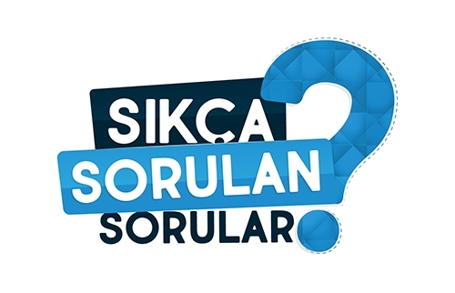

Sed ut pers piciatis unde omnis iste natus error volu ptatem accus antium one dolor emque laudan tium, totam rem aperiam, eaque ipsam quae eillo invetore off veritatis et quasi and medical page
Sedefe yatkınlığı olan kişilerde psikolojik stres ve sıkıntılar sedefi
tetikleyebilir veya mevcut döküntülerin artışına neden olabilir. Bu nedenle
stresi fazla olan kişilerin psikolojik yardım almasının hastalık şiddetini
azaltıcı etkisi olacaktır. Ayrıca diş çürüğü, bademcik iltihabı, idrar yolları
iltihabı gibi mikrobik hastalıklar ve sürtme, çarpma, kaşıma gibi zedelemeler,
fazla alkol alınması, bazı metabolik hastalıklar (hipokalsemi) ve ilaçlarda
tetikleyici olabilir.
01
Özellikle çocuklarda streptokok adında boğazda yerleşen bakteri enfeksiyonlarında
sedefin alevlendiğini belirten Dr. Mehmet İlteber BAHADIR, bu nedenle sürekli
bademcik iltihabı geçiren hastaların tam bir tedavi görmeleri gerekmektedir.
Sıklıkla dermatologlar kişide bir şikayet olmasa bile boğazdan pamuklu bir çubuk
yardımıyla kültür alıp antibiyogram testi isterler. Bunlar haricinde vücutta
sürekli bir enfeksiyon kaynağının bulunduğu hastalıkların (örneğin çürük diş)
tedavisi şarttır.
02
Sedef güneşli iklimlerde azalır ve özellikle kışın artış gösterir. Yine düşük
rakımlı bölgelerde sedef hastalığı daha az görülmektedir. Kuru iklimlerde nem az
olduğu için hastalar kabuklanan bölgelerinde daha fazla kaşıntı hisseder. Bu
nedenle sedef hastaları nemli iklimi olan bölgelerde daha rahat edebilir. Yine
kışın kalorifer ve sobaların etkisiyle hava kurur ve kabuklanmalarda kaşıntı
artar. Dr. Mehmet İlteber BAHADIR’ın hastalarına tavsiyesi kışın bol nemlendirici
kullanmaları yönündedir. Kışın banyo sonrası nemlendirici kullanmak kişideki kış
aylarında görülen sedef lezyonlarının artışını önler.
03
Sedefsiz cildin yaralanması bu bölgede yeni sedef lezyonlarının oluşmasına neden
olabilir. Bu duruma Köbner fenomeni adı verilir. Güneş yanığı ve kesikler bu
duruma yol açabilir. Güneş sedef için çok iyi olsa da uzun süre yakacak derecede
güneşlenmekten kaçınılmalıdır. Sedef hastaları kesinlikle kalıcı dövme
yaptırmamalıdır çünkü dövme yapılan yerlerde de sedef ortaya çıkabilir. Sedef
yaralarında yoğun kaşıntı çevre deride de Köbner fenomeni etkisiyle yeni sedef
yaralarının oluşmasına yol açabilir bu nedenle tedavi edilmelidir. Ayrıca çoğu
sedef hastası kabuklarla oynayıp koparır. Bu durum da yine aynı probleme neden
olabilir.
04
Yapılan çalışmalar özellikle ciddi hayat değişimlerinde sedefin değişiklik
gösterdiği saptanmıştır. Yeni yapılan bazı araştırmalarda stres ile beraber
vücutta bağışıklık sistemini tetikleme özelliği olan bazı maddelerin kanda
arttığı belirlenmiştir. Sedef hastalığı bayanlarda özellikle genç kızlık
dönemlerinde sıkça görüldüğünün altını çizen Dr. Mehmet İlteber BAHADIR,
bayanların bu dönemde daha yoğun stres yaşadığını düşünmektedir. Gene bayanların
aşırı stresli dönemlerinden bir tanesi de hamilelik ve hamilelik sonrası
dönemdir. Bu dönemlerde bayanlar hem aşırı stres artması, hem de hamilelik
sonrası hormon çekilmelerinden dolayı vücutlarındaki lezyonlarda çok ciddi bir
artış görülmektedir. Yine ayrıca pek çok bayan sedef hastalığı ile ilk kez bu
dönemde karşılaşır.
05
Sedef hastalığı erkeklerde her yaşta görülmekle beraber bayanlarda olduğu gibi
çok spesifik değildir. Özellikle erkeklerde kişisel stresin arttığı dönemlerde
hastalar sedef hastalığına ilk kez yakalandığını belirten Dr. Mehmet İlteber
BAHADIR, Örnek vermek gerekirse pek çok hastamda kişi son 1-2 yılda ticari
işlerinin bozulduğundan bahseder. Veyahut ailesinde, anne-baba gibi ebeveyn
ölümlerinin olduğunu görürüz. Bu dönemlerde erkeklerde sosyal ve psikolojik
çöküntülerin sık olduğunu görürüz. Kişiler sedef hastalığı ile ilk kez bu dönemde
karşılaşırlar. Ayrıca Dr. Mehmet İlteber BAHADIR genç erkeklerde üniversite
sınavının ve askerlik döneminin sedef hastalığını tetiklediğini özellikle
belirtti.
06
Hacamat aynı zamanda Peygamber Efendimizin de (Sav) kendisinde uygulamış olduğu
tedavi metotlarından biridir. Aynı zamanda hacamat son iki yıldan beri Sağlık
Bakanlığı tarafından integratif tıpta kullanılan kabul görmüş tedavi
metotlarından biridir. Hacamat kısaca sırt bölgesinde kirli kanın ciltte kesi
yapılarak vakumlanması sonucunda kirli kanın vücuttan dışarı alınmasıdır. Hacamat
uygulanmasında zararlı toksin birikmiş, pıhtılaşıp jöle kıvamına gelmiş pis kan
temizlenir. Sırt bölgesinde lenf drejanının iyi olmadığını belirten Dr. Mehmet
İlteber BAHADIR bu yol ile sırt ağrısı, fibromiyalji, baş ağrısı, epilepsi,
kronik vücut ağrıları, kansızlık, eklem - kas hastalıkları ve genel kapsamlı
vücut detoksu gibi pek çok vakada kullanılabilir diye konuştu. Hacamatın sedef
hastalığı üzerinde etkisi olup olmadığı hakkında net bir bilimsel veri yoktur.
Bizim kliniğimize gelen bir hastanın hacamat yaptırması yasaktır. Cildin darbe
aldığı sülük, hacamat, dövme, vücut kesileri, sert tarak kullanımı yine
bayanlarda sert telli sütyen gibi uygulamalar sedef lezyonlarının büyümesine ve
yeni lezyonların çıkmasına sebep olur. Şu ana kadar pek çok hastada klinik
deneyimim kupa çekmenin, hacamat yaptırmanın sedef hastalığını arttırdığını
gördüm. Yandaki fotoğrafta hacamat yaptıran bir hastadaki lezyonların nasıl
arttığını sizlere göstermek isterim. Görüşmek üzere. İyi günler, Dr. Mehmet
İlteber BAHADIR.
07
Bir zamanlar orta yaş ve yaşlı insanlar insanların hastalığı olarak adlandırılan
romatizmal hastalıklar, maalesef gençlere, hatta çocuk yaşta olan kişilere kadar
görülür duruma gelmiştir. Uzmanlar romatizmal hastalıklar için erken tanı ve
erken tedavi döneminin önemini ısrarla vurguluyorlar. Ancak romatizmal
hastalıkların anlaşılabilmesi için hasta ve yakınlarının yaşanabilecek olası
belirtileri zamanında fark etmesi gerekiyor. Romatizma hastalarının en çok
şikayet ettiği belirtiler nelerdir? -Eklemlerde ağrı, şişlik, hareket kısıtlılığı
-El parmaklarında soğukta beyazlaşma, sararıp solma hali -Cilt altında bezeler
oluşması -Gözlerde sık sık iltihaplanma oluşabilmektedir -Sabahları eklemlerde
sertlik olması, daha sonra yerini yavaş yavaş gevşemeye bırakması durumu
-Özellikle sabahları daha belirgin bel ağrısı ve tutukluk hali -Güneşte ciltte
aşırı duyarlılık ve yaralar gelişmesi -Ellerde veya vücudun herhangi bir yerinde
deride sertlik -Güçsüzlük, merdiven inip çıkamama, oturup kalkamama ve kaslarında
ağrı oluşması Son söz bu hastalıklarda ve her hastalıkta moral ve doğru tedavi
çok önemlidir. Hasta ve yakınlarına düşen vazife vazgeçmeden şifayı ve doğru
tedaviyi aramaktır.
08
Dr. Mehmet İlteber Bahadır ile yeni bir söyleşide beraberiz. Tecrübelerini
kendinden aktarmalarını bekliyoruz.
Sedef hastalığının çok sık tuttuğu bölgelerden daha önceki programlarda
bahsetmiştik. Bu bölgeler kollar, bacaklar, saçlı deri, kulak arkası, diz ve
dirsek gibi cildin daha sık darbe aldığı noktalardır. Gerçekten de artık bir
hasta geldiğinde olsun olmasın tüm hastalarda alt bacak, diz, kollar ve
dirseklere otomatik olarak bakıyorum ve hemen hemen gelen hastaların %80’den
fazlasında bu bölgelerde sedef hastalığı lezyonları görüyoruz. Yüz bölgemiz bizim
en değer verdiğimiz ve normal sağlıklı insanların da cilt bakımı yaptığı
bölgelerin başında geliyor. Özellikle soğuk havalarda hemen hemen hepimiz yüz
bölgemizde çeşitli yağ ve aromalar içeren kremler uygulayarak cilt bakımı
sağlıyoruz.
Hatta pek çok kişide özellik bayanlarda yüzde krem kullanmak bir alışkanlık haline gelmiştir diyerek önemli bir noktanın altını çizmek istiyorum. Şimdi gelelim yüz bölgesinde sedef hastalığı olur mu sorusunun cevabına;
Gerçekte yüz bölgesi sedef hastalığı lezyonlarının kol, bacak gibi sık tuttuğu bölgelerden biri değildir. Bunun iki sebebi vardır, birinci sebebi; yüzdeki ter bezleri sayesinde yüzdeki yağ nem dengesi vücudun diğer bölgelerine göre çok daha iyidir. Terleme ile beraber cildin yağlanması yüzümüzdeki cildi çok daha iyi besler. Yüz daha genç, parlak ve sağlıklı olarak gözükür. Bu sayede sedef hastalığı lezyonları yüzü çok fazla tutmaz diyen Dr. Mehmet İlteber Bahadır sözlerine şöyle devam etti; lezyonların yüzde fazla çıkmamasının ikinci sebebi ise; yüzümüz kol, bacak, diz, dirsek gibi fazla darbe almaz. Çünkü bir insanın en çok özendiği koruduğu, kolladığı bölgelerin başında yüzümüz gelir. Gün içerisinde de yüzümüzü tüm çevresel faktörlerden, darbelerden koruruz. Daha önceki programlarda soğuk havanın cilde bir darbe olduğundan bahsetmiştik. Çeşitli yüz kremlerinde kullanılan A ve D vitamini içeren çeşitli aromatik yağlar ile yapılmış kremler kullanmak cildi soğuk havanın etkilerinden korur.” Bir kişi krem alırken içindeki yağların hangi özelliklere sahip olması gerekmektedir?” Bu çok anlamlı bir soru diyen DR. Mehmet İlteber Bahadır sorunun cevabına şu şekilde devam etti;
Bunu aslında uzun bir söyleşi yaparak anlatmak lazım, çünkü kullanılan yağlar bizim kendi kliniğimizde tedavide kullandığımız ürünlerin başında geliyor. Hastalara kısaca şunu söyleyebilirim. Her yağ, yağ değildir. Her krem de sedef hastalarının kullanabileceği krem değildir. Krem alırken içinde pek çok kimyasal türev olmaması gerekmektedir, ikinci olarak yağların aromatik bölge yağları özellikle sıcak bölgelerde yetişen bitkilerden seçilmiş yani içinde D vitamini yüksek oranda olan yağları bizzat kendim seçerek hastalara uyguluyorum.
Yukarıda uzun uzun yüzde sedef hastalığının olmadığından bahsetmiştik. O zaman bir hasta bize geldi ve yüz bölgesinde sedef hastalığı lezyonu var, olmaması gerekirdi buradaki yanlış, eksiklik ya da fazlalık nedir? Sorunun birinci sebebi maalesef yüzümüzde kullandığımız kremler özellikle bayan hastalarda yüzde sedef hastalığı lezyonlarını daha fazla görürüz ona sebep, bayanların daha genç ve güzel görünmek için bir alışkanlık olarak erkeklerden daha fazla krem kullanırlar. Yanlış krem kullanımı cilt altında alerjik reaksiyon yapar ve kişinin cildi adeta bebek poposu gibi şişer, cilt kabarır. Bütün bunlar cilde darbe olarak algılanır ve maalesef hassaslaşan bölge iyileşme döneminde yerine sedef hastalığı lezyonlarını bırakır. Sonuçta yanlış krem seçimi ve aşırı kullanımı yüz bölgesinde sedef hastalığının ana sebebidir.
Diğer sebepleri saymak gerekirse; akne, yüz bölgesine dövme yaptırılması, saçlı deride sert tarak kullanılması , yüzde piercing kullanılması cilde darbe olarak algılanır ve sedef hastalığının yüzde artmasına sebep olur.
Yüzde krem seçimi başta olmak üzere tüm etkenler sedef hastaları tarafından dikkate alınmalı ve uyulmalıdır. Bu kendilerinin çok daha rahat bir hayat sürmesini sağlar. Biz yüzde kortizonlu krem kullanılmasını asla önermiyoruz, zaten daha ince ve narin olan cilt çok kısa bir süre de incelip yok olur diyen DR. Mehmet İlteber Bahadır; kortizon sürmenin yüzde sedefi arttırabileceğini söyledi. 09
Hatta pek çok kişide özellik bayanlarda yüzde krem kullanmak bir alışkanlık haline gelmiştir diyerek önemli bir noktanın altını çizmek istiyorum. Şimdi gelelim yüz bölgesinde sedef hastalığı olur mu sorusunun cevabına;
Gerçekte yüz bölgesi sedef hastalığı lezyonlarının kol, bacak gibi sık tuttuğu bölgelerden biri değildir. Bunun iki sebebi vardır, birinci sebebi; yüzdeki ter bezleri sayesinde yüzdeki yağ nem dengesi vücudun diğer bölgelerine göre çok daha iyidir. Terleme ile beraber cildin yağlanması yüzümüzdeki cildi çok daha iyi besler. Yüz daha genç, parlak ve sağlıklı olarak gözükür. Bu sayede sedef hastalığı lezyonları yüzü çok fazla tutmaz diyen Dr. Mehmet İlteber Bahadır sözlerine şöyle devam etti; lezyonların yüzde fazla çıkmamasının ikinci sebebi ise; yüzümüz kol, bacak, diz, dirsek gibi fazla darbe almaz. Çünkü bir insanın en çok özendiği koruduğu, kolladığı bölgelerin başında yüzümüz gelir. Gün içerisinde de yüzümüzü tüm çevresel faktörlerden, darbelerden koruruz. Daha önceki programlarda soğuk havanın cilde bir darbe olduğundan bahsetmiştik. Çeşitli yüz kremlerinde kullanılan A ve D vitamini içeren çeşitli aromatik yağlar ile yapılmış kremler kullanmak cildi soğuk havanın etkilerinden korur.” Bir kişi krem alırken içindeki yağların hangi özelliklere sahip olması gerekmektedir?” Bu çok anlamlı bir soru diyen DR. Mehmet İlteber Bahadır sorunun cevabına şu şekilde devam etti;
Bunu aslında uzun bir söyleşi yaparak anlatmak lazım, çünkü kullanılan yağlar bizim kendi kliniğimizde tedavide kullandığımız ürünlerin başında geliyor. Hastalara kısaca şunu söyleyebilirim. Her yağ, yağ değildir. Her krem de sedef hastalarının kullanabileceği krem değildir. Krem alırken içinde pek çok kimyasal türev olmaması gerekmektedir, ikinci olarak yağların aromatik bölge yağları özellikle sıcak bölgelerde yetişen bitkilerden seçilmiş yani içinde D vitamini yüksek oranda olan yağları bizzat kendim seçerek hastalara uyguluyorum.
Yukarıda uzun uzun yüzde sedef hastalığının olmadığından bahsetmiştik. O zaman bir hasta bize geldi ve yüz bölgesinde sedef hastalığı lezyonu var, olmaması gerekirdi buradaki yanlış, eksiklik ya da fazlalık nedir? Sorunun birinci sebebi maalesef yüzümüzde kullandığımız kremler özellikle bayan hastalarda yüzde sedef hastalığı lezyonlarını daha fazla görürüz ona sebep, bayanların daha genç ve güzel görünmek için bir alışkanlık olarak erkeklerden daha fazla krem kullanırlar. Yanlış krem kullanımı cilt altında alerjik reaksiyon yapar ve kişinin cildi adeta bebek poposu gibi şişer, cilt kabarır. Bütün bunlar cilde darbe olarak algılanır ve maalesef hassaslaşan bölge iyileşme döneminde yerine sedef hastalığı lezyonlarını bırakır. Sonuçta yanlış krem seçimi ve aşırı kullanımı yüz bölgesinde sedef hastalığının ana sebebidir.
Diğer sebepleri saymak gerekirse; akne, yüz bölgesine dövme yaptırılması, saçlı deride sert tarak kullanılması , yüzde piercing kullanılması cilde darbe olarak algılanır ve sedef hastalığının yüzde artmasına sebep olur.
Yüzde krem seçimi başta olmak üzere tüm etkenler sedef hastaları tarafından dikkate alınmalı ve uyulmalıdır. Bu kendilerinin çok daha rahat bir hayat sürmesini sağlar. Biz yüzde kortizonlu krem kullanılmasını asla önermiyoruz, zaten daha ince ve narin olan cilt çok kısa bir süre de incelip yok olur diyen DR. Mehmet İlteber Bahadır; kortizon sürmenin yüzde sedefi arttırabileceğini söyledi. 09
Geçtiğimiz İki yıl boyunca kovid-19 merkezli yaşamaya alıştığımız günlerde ya eve
daha çok iş getirir olduk ve böylece evimiz aynı zamanda iş yerimiz haline geldi.
İş hayatı hasta bile olsak hayatımızın vaz geçilmez şartlarının başında geliyor.
Peki ev ortamının dar şartlarında Ankilozan spondilit gibi bir hastalıkla nasıl
mücadele edebiliriz, gelin bunu anlatalım. Uzun saatler boyunca bilgisayar
başında çalışılıyorsa kuşkusuz oturma pozisyonlarımız sebebiyle kamburlaşma
kendisini hissettirmektedir. Bu durum ankilozan spondilit hastaları için
istenmeyen bir problemdir. Bu hastalık sakroiliak iltihaplanması ile karakterize
olup başta sırt ve kalça bölgesi olmak üzere omuzlarda bazen de kol ve bacak
eklemlerinde kendisini ağrılı bir şekilde hissettirmektedir. Peki hem ev
ortamında olup, özellikle de bilgisayar başında çalışıyorsak bu ağrıları
azaltmanın yolları nelerdir bunları inceleyelim. Çalıştığımız bilgisayar,dizüstü
bilgisayar veya laptop adını siz koyun burada önceliğimiz duruş güvenliğimizi
sağlamak olacaktır. İyi bir duruş pozisyonu için mümkünse ergonomik bir oturma
koltuğu size çok iyi gelecektir. Ama benim böyle bir koltuğum yok diyorsanız hiç
problem değil onun da çaresi var elbette. Burada size gerekli olan koltuğunuzun
bilgisayara göre yüksekliğini ve sırtınızın doğru açısını sağlamak için bir çift
yastıktır. Böylece bu yastıklar sayesinde daha dik pozisyonda oturma imkanı
sağlanacaktır. Yalnız oturduğunuz minder veya yastık sizi yeterli yüksekliğe
ulaştırmıyorsa ideal yüksekliğe ulaşıncaya kadar yeni minder takviyeleri
yapabilirsiniz. Unutmayın çalıştığınız bilgisayar ekranı göz hizanızda (Biraz
altında da olabilir) ve size kabaca bir kol uzaklığında olacak şekilde
ayarlamalısınız. Şimdi gelelim kol ve dirsek pozisyonunuza; burada dirsekleriniz
90 derecelik bir açıda olamalı ve pazu bölgeniz çalışırken vücuda yakın konumda
bulunmalıdır. Bunu sağlamak için klavyenizi masanızdan daha alçak bir bölgede
kullanmanız yeterli olacaktır. Çalıştığınız dizüstü bilgisayar ise
bilgisayarınızın altına devrilmeyecek güvenlikte bir yükseltici koyarak hem
dizüstü bigisayarınızın seviyesini göz hizasına yükseltebilir hem de klavye
açınızı doğru hale getirebilirsiniz. Ancak burada püf nokta harici klavyenin var
olmasıdır, aksi takdirde vücut dirseklerden verim alamayacak ve duruş bozukluğu
yaşanabilecektir. Bilgisayarınızı yazarken koltuğunuza hafif bir açı ile
yaslanarak ve ayaklarınızın altına bir yükseltici koyarak çalışmak işinizi
kolaylaştıracaktır. Burada işin en önemli noktalarından biri de hiç şüphesiz
nerede duracağımızı bilmek ve molaları ihmal etmemektir. Uzmanlar genel olarak
yarım saatte bir yeterli molalar vermeyi öneriyorlar. Bu aralarda yerinizden
hemen kalkıp evinizi turlamalı ve vücudu esnetici (ama zorlayıcı değil)
hareketler yapmalısınız. Bu molalar için sizi uyarması için bir yakınınızdan ya
da telefonunuzun alarmından destek alabilirsiniz. Unutmayın bu kısa molalar
sadece ankilozan spondilit için değil işin verdiği strese de faydalı olacaktır.
Ne yaparsanız yapın ama vücudunuzun tepkilerini mutlaka dikkate alın. O size
tamam veya devam diyecektir. Son söz olarak hasta ve hasta yakınlarına düşen
vazife hastalığın tüm yıpratıcılığına rağmen şifayı ve tedaviyi aramaktan vaz
geçmemeleri olacaktır. Sağlık dolu günler dileriz.
10
Egzama, kaşıntılı, kızarık ve iltihaplı cilt lezyonlarıyla kendini gösteren
kronik bir deri rahatsızlığıdır. Egzama tedavisinde, sadece dışarıdan uygulanan
kremler ve losyonlar yeterli olmayabilir. Beslenme alışkanlıklarınız da egzamanın
şiddeti üzerinde büyük etkiye sahip olabilir. İşte egzama ile beslenme arasındaki
bağlantıyı anlamak ve doğru gıdalarla iyileşmeye adım atmak için bazı önemli
ipuçları: Anti-enflamatuar Besinler Tercih Edin: Egzama, vücutta artan
enflamasyonla ilişkilidir.
Doktorunuzun tavsiye ettiği tedavinize uygun olarak, anti-enflamatuar etkisi olan besinleri tüketmek önemlidir. Somon, avokado, zeytinyağı gibi omega-3 yağ asitleri içeren gıdalar, egzama semptomlarını hafifletebilir. Bağışıklık Sistemini Destekleyin: Egzama, bağışıklık sistemindeki bozukluklarla doğrudan ilişkilidir.
Doktorunuzun tedavi planına uygun olarak, bağışıklık sistemini destekleyen besinleri tüketmeye özen gösterin. C vitamini açısından zengin meyve ve sebzeler, egzama tedavisinde faydalı olabilir. Portakal, çilek, kivi gibi C vitamini kaynaklarına yer vermek önemlidir. Probiyotik Gıdaları Deneyin: Bağırsak florasındaki dengenin egzama üzerinde önemli bir etkisi olduğu düşünülmektedir.
Doktorunuzun tedavi planına uygun olarak probiyotik gıdaları tüketmeyi deneyebilirsiniz. Yoğurt, kefir, turşu gibi probiyotik içeren gıdalar, bağırsak sağlığını destekleyerek egzama semptomlarını hafifletebilir. Unutmayın, her bireyin egzama semptomlarına tepkisi farklı olabilir. Bu nedenle, kişiselleştirilmiş bir beslenme planı oluşturmak için bir uzmana danışmanız önemlidir. Egzama ile beslenme arasındaki bağlantıyı anlamak, doğru gıdaları tüketmek ve egzama semptomlarınızı hafifletmek için tedavi sürecinde doktorunuzla işbirliği yapmanız önemlidir. 11
Doktorunuzun tavsiye ettiği tedavinize uygun olarak, anti-enflamatuar etkisi olan besinleri tüketmek önemlidir. Somon, avokado, zeytinyağı gibi omega-3 yağ asitleri içeren gıdalar, egzama semptomlarını hafifletebilir. Bağışıklık Sistemini Destekleyin: Egzama, bağışıklık sistemindeki bozukluklarla doğrudan ilişkilidir.
Doktorunuzun tedavi planına uygun olarak, bağışıklık sistemini destekleyen besinleri tüketmeye özen gösterin. C vitamini açısından zengin meyve ve sebzeler, egzama tedavisinde faydalı olabilir. Portakal, çilek, kivi gibi C vitamini kaynaklarına yer vermek önemlidir. Probiyotik Gıdaları Deneyin: Bağırsak florasındaki dengenin egzama üzerinde önemli bir etkisi olduğu düşünülmektedir.
Doktorunuzun tedavi planına uygun olarak probiyotik gıdaları tüketmeyi deneyebilirsiniz. Yoğurt, kefir, turşu gibi probiyotik içeren gıdalar, bağırsak sağlığını destekleyerek egzama semptomlarını hafifletebilir. Unutmayın, her bireyin egzama semptomlarına tepkisi farklı olabilir. Bu nedenle, kişiselleştirilmiş bir beslenme planı oluşturmak için bir uzmana danışmanız önemlidir. Egzama ile beslenme arasındaki bağlantıyı anlamak, doğru gıdaları tüketmek ve egzama semptomlarınızı hafifletmek için tedavi sürecinde doktorunuzla işbirliği yapmanız önemlidir. 11
Bir zamanlar orta yaş ve yaşlı insanlar insanların hastalığı olarak adlandırılan
romatizmal hastalıklar, maalesef gençlere, hatta çocuk yaşta olan kişilere kadar
görülür duruma gelmiştir. Uzmanlar romatizmal hastalıklar için erken tanı ve
erken tedavi döneminin önemini ısrarla vurguluyorlar. Ancak romatizmal
hastalıkların anlaşılabilmesi için hasta ve yakınlarının yaşanabilecek olası
belirtileri zamanında fark etmesi gerekiyor. Romatizma hastalarının en çok
şikayet ettiği belirtiler nelerdir? -Eklemlerde ağrı, şişlik, hareket kısıtlılığı
-El parmaklarında soğukta beyazlaşma, sararıp solma hali -Cilt altında bezeler
oluşması -Gözlerde sık sık iltihaplanma oluşabilmektedir -Sabahları eklemlerde
sertlik olması, daha sonra yerini yavaş yavaş gevşemeye bırakması durumu
-Özellikle sabahları daha belirgin bel ağrısı ve tutukluk hali -Güneşte ciltte
aşırı duyarlılık ve yaralar gelişmesi -Ellerde veya vücudun herhangi bir yerinde
deride sertlik -Güçsüzlük, merdiven inip çıkamama, oturup kalkamama ve kaslarında
ağrı oluşması Son söz bu hastalıklarda ve her hastalıkta moral ve doğru tedavi
çok önemlidir. Hasta ve yakınlarına düşen vazife vazgeçmeden şifayı ve doğru
tedaviyi aramaktır.
12
Sedef hastalarının giyinmeleri, kullandıkları kumaşlar, giyiniş şekilleri,
hastalığın seyrini etkiler mi gibi pek çok sorunun cevabını bu kısa makalede
vermeye çalışacağız;
Her zaman belirttiğim gibi ana kuralımız cildin yağ ve nem dengesini doğru oran
da sağlamaktır. Kliniğimiz de her gün onlarca hastaya bakıyoruz,
tecrübelerimizden yola çıkarak pek çok hastada gözlemlerimiz sonucu hastaların
gövde, sırt ve karın kısımların da hiçbir lezyon yokken yani tertemiz sapasağlam
bir cilt gözlemlerken, kol ve bacaklarda çok yoğun özellikle plak yapmış ciltten
kabarık sedef lezyonlarını gözlemleriz o zaman sorumuz şu şekilde olmalı diyen
DR. Mehmet İlteber Bahadır; kol ve bacaklarda sedef lezyonları varken hangi
etkenler sebebiyle bu lezyonlar gövde de yani karın ve sırtta çıkmamıştır, bu
sorunun cevabı aslında bizim nasıl giyinmemiz gerektiğini anlatır özellikle kışın
iç çamaşırı, atlet fanila gibi sık dokunmuş, pamuklu , nemi içerde tutan
gövdemizin darbe almadan saran kıyafetler sedef hastalığının vücutta yayılmasını
engelleyen ana faktörlerdir. Kışın soğuk havanın kol ve bacaklara olan teması
sedef hastalığı lezyonlarının bu bölgelerde yayılmasını sağlar, oysa nemi içerde
tutan giydiğimiz iç çamaşırları cildin çatlamasını önlemiş ve lezyonların
yayılmasına imkan vermemiştir. O zaman ilk sorumuza cevap vermek gerekirse; kışın
gövdeyi ve kolları bileklere kadar saracak, nemi içerde tutan, sık dokumalı
pamuklu sweatshirt tarzı giysileri sedef hastalarına tavsiye ederiz. Kaçınılması
gereken giysiler ise kalın, yünlü, soğuk havanın cilde temasını engellemeyen
kışlık kazak gibi giysilerdir bu tip giysiler de kişinin cildi hızla kurur cilt
nemini kaybeder soğuk havayla temas eden cilt çatlar ve sedef hastalığı
lezyonların da artış olur. Bu tip kalın yünlü sık dokunmamış kazak tarzı giysiler
giymek zorunda kalan hastalara mutlaka kalın kazaklarının altına kolları
bileklere kadar uzanan bodyler giymelerini tavsiye ederiz. Bu sayede cildimiz
kuruyup çatlamaz, kişinin cildi kendi yağı ile beslenir. Kişi soğuk havadan
etkilenmez cildin yağ nem dengesi mükemmele ulaşır diyorum.
Dr. Mehmet İlteber Bahadır sözlerine şu şekil de devam etti;
Sedef hastalarında bu basit kurallar hayatımızın büyük oran da kolaylaşmasını
sağlayacaktır kışın soğuk hava da dışarı çıkarsanız özellikle kol ve
bacaklarınızı koruyacak sweatshirt-body tarzı giyinmenizi öneririm, bu kısa
makaleler ile sizi bilgilendirmeye çalıştım hepiniz sağlıcakla kalın, hoşça
kalın.
13
Romatizmal hastalıklar, eklem, kas ve kemiklerde ağrı, şişlik ve hareket
kısıtlılığı gibi sorunlara yol açan, iltihaplı ve bağışıklık kaynaklı
rahatsızlıklardır. Romatizmanın başlıca belirtileri şunlardır: -Sabah tutukluğu
ve eklem sertliği -Eklem ağrısı, şişlik ve kızarıklık -Hareketle artan ağrı
-Kireçlenme ve eklem deformiteleri -Kronik yorgunluk -Ateş ve titreme
-İştahsızlık ve kilo kaybı Romatizma teşhisi için doktor muayenesi, görüntüleme
yöntemleri ve laboratuvar testleri yapılır. Kan testleri iltihap belirteçlerini,
romatizma faktörünü ve antikor düzeylerini ölçer. Eklem sıvısı incelenerek de
romatizmal hastalıklar teşhis edilebilir. Erken teşhis ve doğru tedavi ile
hasarın ilerlemesi önlenebilir.
14
Hastaların hayatını olumsuz etkileyen hatta ileri tabirle cehenneme çeviren
iltihaplı romatizma( Romatoid Artrit) sadece eklemlere zarar vermekle kalmıyor,
zamanında önlem alınmazsa ve gerekli tedaviler uygulanmazsa damarları da
etkileyerek damar sertliğine neden olabiliyor. İltihaplı Romatizma (Romatoid
Artrit) hastalarının deformasyonlar ve ağrı sebebiyle önce günlük alışkanlıkları
bozuluyor ve sonuçta hayat kaliteleri olumsuz yönde etkileniyor. Romatoid Artrit
hastalarının rahatsızlıkları sürecinde yoğun bir iltihabik etkinlik yaşanıyor.
Hastanın kendini mecalsiz ve yorgun hissetmesi bu hastalığın bilinen
rutinlerindendir. Kronik bir hastalık olan “İltihaplı Romatizma” ağrı ve
fonksiyon kayıplarıyla kendini gösterir. Zaman içinde yaşanan deformasyonlar ve
ağrı sonucunda maalesef farklı bir hastalık depresyon tetiklenerek hastayı
umutsuzluğa itebilmektedir. Hasta eğer kendini toplumdan ve kendi sosyal
çevresinden soyutlamaya başlarsa depresyon gelişme ve ilerleme eğilimi gösterir.
Yapılan araştırmalarda Romatoid Artrit hastalarının yüzde 40’ının depresyon
tehdidi altında olduğu saptanmıştır. Tedavi edilmediği ve hastalık müzminleşme
sürecine girdiği takdirde hastaların ömür süreleri kısalmakta , bu hastalığa
yakalanmayan sağlıklı bireylere göre 5-10 yıl daha kısa yaşamaktadırlar. En
önemli vefat sebepleri arasında mide-bağırsak kanamaları, kalp-damar hastalıkları
ve enfeksiyonlar gelmektedir. Unutulmaması gereken önemli nokta şudur: Hastalık
varsa şifası da mevcuttur, sadece hasta ve yakınlarına düşen vazife çareyi arayıp
bulmak ve sabırla uygulamaktır.
15
